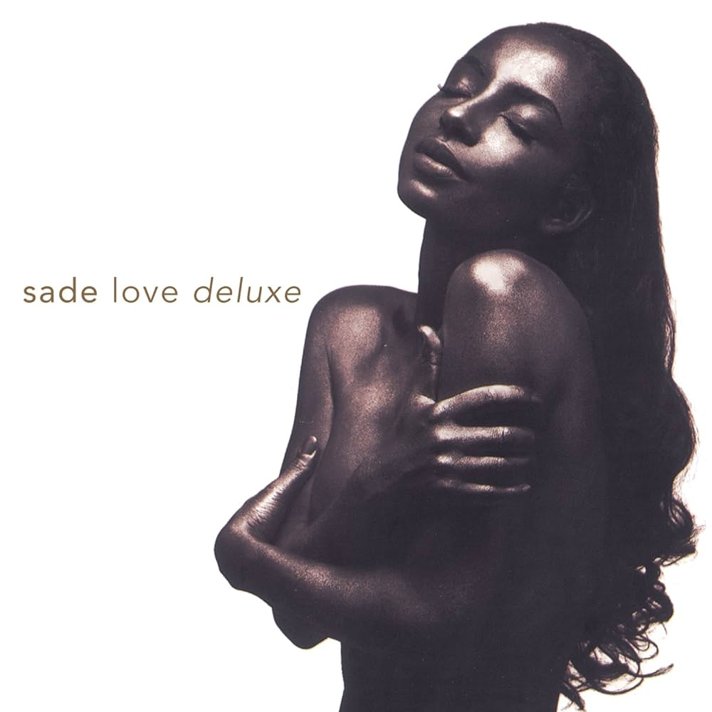

Early Life: Born Helen Folasade Adu in Ibadan, Nigeria, on January 16, 1959, Sade's journey began amidst cultural richness. Raised in England from the age of four, she found her artistic calling at the prestigious Saint Martin's School of Art in London. Before captivating the world with her voice, Sade gained recognition as a fashion designer and part-time model.
After a hiatus in 1996, Sade rekindled the magic with a triumphant return to the music scene. The albums “Lovers Rock” (2000) and “Soldier of Love” (2010) not only showcased Sade’s timeless artistry but marked a spectacular comeback for the band. The ethereal melodies and evocative lyrics continued to resonate, captivating audiences worldwide. Documented in
Embark on a transcendent melodic journey as we explore the life and artistry of the iconic Sade Adu. Born in Nigeria on January 16, 1959, Sade’s early years were enriched with cultural diversity before her family relocated to England when she was four. This cultural fusion laid the foundation for her future musical endeavors. From
Sade’s legacy is not confined to chart-topping hits and awards; it transcends into an enduring influence that resonates across genres and generations. In 2023, Rolling Stone acknowledged her as the 51st greatest singer of all time, a testament to the profound impact of her voice. Rappers like Rakim, Missy Elliott, and Kanye West have all